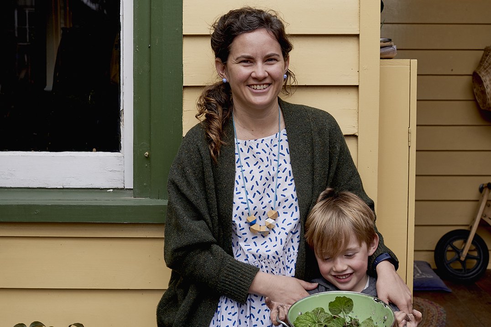

Bowerbirds - The Boweress
A community for women in food and drinks
1 March, 2018
You run two food online entities; Fully Booked and Curate Eat. Tell us about Curate Eat ?
Curate Eat came about first and that was me just setting up a business to work in whilst my priority was the boys. Because my husband works in hospitality he is there early and late, all the time, weekends so I had to be around for the kids. I came from working for the Melbourne Food and Wine Festival and I had been the gastronomy director for 5 and half years. I had worked with the festival and continued working there after Finn was born 3 days a week but then Jay came along and it was a bit too much.
I really wanted to be connected with the industry but I wasn’t able to be working for someone so that’s where Curate Eat came from and I could also use my little great black book of contacts with chefs.
I was doing some of my own events but then I started helping other people on their own events. I worked with intrepid travel when they came to Victoria and needed specific contacts or links with chefs or creative work done. I also worked with Attica restaurant, they did a festival a couple of years back called The War Gathering. We had 50 chefs from overseas and Australia, a kind of anti-festival and we pulled it all together in 4 months so I was the festival manager for them. They were filming Ben for ‘Chef’s Table’ whilst we were getting ready for this festival so it was really cool to have that crew around as it’s such a great series.
How did this lead into Fully booked? What are it’s aims and how does it link women in the hospitality industry together?
It was an idea I was tossing around in my head, I wanted to be able to showcase women but I also wanted to build a community for women. When we did the first event I didn’t really know what the outcome was going to be or where we were going with it but I just kind of wanted to give a voice to women in the industry. We have done 15 events now, each one of them focuses on 1 or 2 or up to 7 different females depending on the format and the partner and it’s been really well received. The women in the industry have loved having the chance to be interviewed and embraced. Jo Barrett was the first chef that I worked with and a great example. Jo is Matt Stone’s’ partner and they are co-head chefs at Oakridge in the Yarra Valley. Since she did that first event with me, festivals have asked her to be involved and she’s done appearances at Margaret river, at Melbourne Food and Wine. It just takes one event to get that profile going and then there’s that natural progression.
Along the way I worked on various projects for people and I knew that there was this gap for women and I’d been in these roles where they were not putting women forward because the powers that be didn’t value women as much. Because they weren’t a Jamie Oliver, a Matt Moran, a Shannon Bennett. They weren’t a chef with a name and a profile and a TV show and they weren’t prepared to put money on supporting them. There’s not a lot of women at the top of the restaurant world. Things are changing but it will take a long time. This is just one industry though, you see the festivals locally in Australia and there’s a line up with 50 chefs and there’s two women out of fifty and one was a wine writer and one female chef, and it just makes no sense.
Kitchens are very male environments, and that’s a reason why there are less women in high profile senior roles, there are less women to choose from. Women are also less likely to put themselves forward for something. I can’t remember where the information came from but it was something like there’s a position description and a man has only 40% of the selection criteria and he will go ahead and apply for that job and the woman has 80% and she won’t apply for that job.
So, you want these women essentially to be Fully Booked?
(laughs) Yeah, definitely! We don’t go on about what women or men are, there’s no kind of discussion or comparison it’s just here’s the women and this is what they’re doing.
The industry knows that it has to make a change in the workplace to encourage more women to come back into the workplace after having kids so there are workplaces there that are trying to be innovative in that space by job sharing and less hours and less days. Hospitality is a very hard industry, it’s long unusual hours, wages are very high for a business owner, people are necessarily paid very well but the number of man hours that you need makes wages 30% of your business costs. I think we’ve also had discussions with women in the industry that are trying to be, as I said, innovative in that space and come up with solutions to encourage women to want to stay in the industry. Then I guess there are people like me who found it challenging to get back in the industry and rather than do something else or not work I’ve forged my only little niche and I want to show women that there is the resources and support for them to do that as well.
You’ve co-authored a cookbook and have a husband working in the field.
Yeah, it’s out on the 1st October and Finn read it front to back then gave us some meals that he would like added in, so we have that inside which is pretty cute. It will be on the shelves in a couple of weeks. Matt has written 2 books before so he’d been through the process. I had been involved with people writing books in the past and when I was at the festival we would put together a recipe book for our masterclass program so that was a lot of deciphering chef’s scribbles on paper (laughs) and putting them into a format that home cooks could use. I’m not a chef but I have been to cookery school in Ireland where you live on the farm and learn about the whole cycle of food. I left there, went back to London and was like ok I’m going to work in a kitchen. I was at a restaurant that was a 1 Michelin star level and I just didn’t like it, I had come from being really creative to this really structured environment where you have to do the same thing over and over every day and it was…boring. I mean I loved the rush of service and plating up but the day to day lacked creativity. MasterChef is a good example, where very few contestants go on to work in a kitchen as they spend 3 or 4 months being incredibly creative, coming up with mystery boxes and challenges and then you go to a kitchen and you don’t realise the repetitiveness, I mean you could be peeling potatoes for 8 hours (laughs). All these chefs that have been cooking for 30 years, that’s how they started off and they’ll be damned if they don’t too.
You’re pairing conversation with great food, how important is conversation at meal time?
I mainly cook at home, Matt works a lot but we will always sit down to have dinner at 6pm which is really important to us and we can talk through each others day.
In a restaurant, cafe or at home we seek to create a space to share meal times with family and friends – how important is it for you to have a space of your own? Essentially where is your bowery and what are some things you need in there to keep you content?
I think its outside, I’m very much an outside person. On the weekends, I love taking the boys out to the park, we have this really fantastic park a block away and we’re either walking or riding or down at the parklands doing a bushwalk. I particularly love that bench in my garden and just the other day when the sun came out I was like boys I’m going outside and enjoying the sun. Winter in Melbourne starts in April/ May and it’s still here for us. We have this beautiful blossom in our front yard, and on the first August pop, the flowers come out so we have this beautiful month of August with this pink tree in the yard and everyone stops and takes photos of it and then September starts and it’s spring and we’re like yay!
You describe yourself as an urban hippy in your Instagram, define a Melbourne urban hippy.
Im all about being natural in all forms of my life but to be successful I think you need to be on board with it and believe in it. For example getting rid of all the plastic in your kitchen, you have to get into that mind-set. I’ve bought some glass containers but I didn’t just chuck all the plastic out, it was a slow progression. I remember saying to Matt this is the last roll of cling film in the house, we’re not buying anymore and he was like what! (laughs) and we’ve still got the same roll we just never use it and you just look at other alternatives. It’s also just having less stuff, less of everything which is hard with kids. We don’t watch commercial TV just Netflix and we feel like this whole level of noise has been removed from our lives. We don’t have to see any ads, we don’t have to hear the news, the boys don’t see the newspapers, they sometimes hear the radio in the car
Sharlee and her husband Matt Wilkinson’s book “Mr and Mrs Wilkinson” is available from 1/10/17. Pick one up and channel your Melbourne urban hippy through cooking some awesome meals.
Check out all the great things that are happening on Fully Booked Women here.
.
